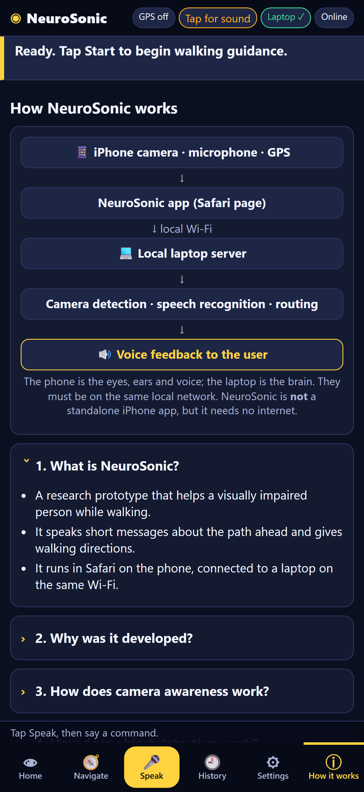

Architecture

Phone = camera, mic, GPS, speaker (Safari). Laptop = all AI, over local Wi-Fi.3


RF-DETR Nano: best person AP@0.5 (0.660) and recall (0.729), 21 ms on the GPU, Apache-2.0. YOLO26 is faster but AGPL-3.0 and lower recall. Data: 365 near-IR images, 129 people (not phone images).


